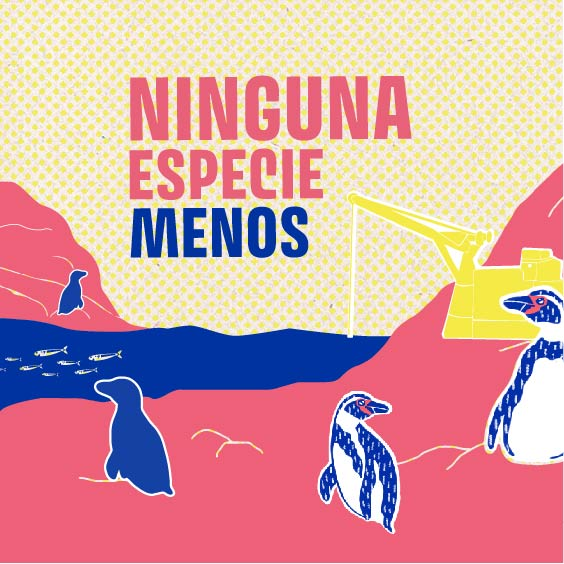
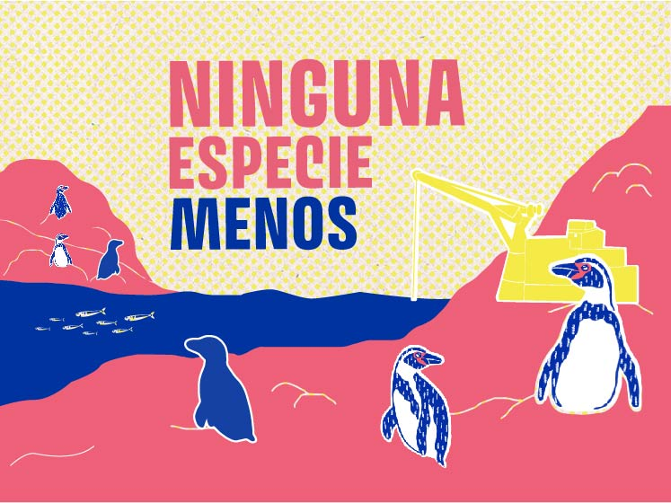

El cambio está en tus manos
Alianza Humboldt define a Dominga como un megaproyecto portuario-minero que busca ubicarse en el Archipiélago de Humboldt con dos minas, para extraer millones de toneladas de metales por 22 años.
Alianza Humboldt es una organización que reúne 90 agrupaciones que buscan defender y proteger el Archipiélago de Humboldt.